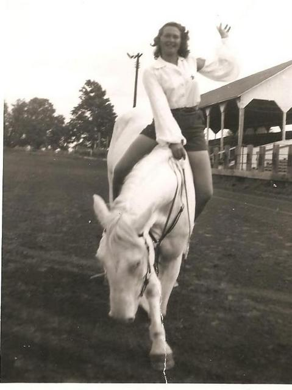

THE FAMILY OF BYRON WOOD
DELORES BENSON AT AGE 17 RIDING ROMAN ON BARNEY AND EASY GIRL WITH CRYSTAL IN THE MIDDLE
THE STORY OF LULU AND BYRON AND THEIR FAMILY
By Delores Wood Benson
My Mom, Lulu Radke, met Byron Wood at Triboji Beach
Round up July 4,5,6, and 7, 1929. It was a big rodeo, big name
contestants, trick riders, along with Indian tribes in all their
fancy dress from all over. One of the features of the entertainment was
a swimming race. Lulu and her sister were excited, they had entered the
race. They always rode on their Dad's draft horses. Lulu was riding
Westwind and Nina was on Jack. They only lived a half mile from the
rodeo site. When it was time for the swimming race, the horses were
being lined up at the water's edge. In they plunged, but Lulu's
Westwind balked. She kept trying to persuade her and some cowboys
watching decided to give her a hand. They pushed Westwind into the
water, but she began to lunge throwing Lulu off and became
uncontrollable. She went under water. Lulu
managed to swim to shore and a couple of the cowboys floated Westwind
to shore, but she had drowned. Lulu and Nina were in shock, how would
they tell their Dad? He was unaware of the rodeo or what they were
doing. Lulu had graduated from Spirit Lake High School in the spring.
Nina had another year.
The cowboy was Byron and he took Lulu to a farm over the line in
Minnesota to replace Westwind, leaving Nina sitting on that beautiful
wet dead horse, to go back to the farm and tell Dad. Byron and Lulu
brought a saddle sized riding horse to her Dad, his name was Dan. Her
Dad who came from Germany as a hideaway on a ship to keep out of the
military in WW1 said some very unkind words, "Take that horse,
that-----daughter, get out and off my farm!"
The rodeo opened the next day, Lulu on Dan, Nina on Jack riding in the
grand entry, (I have a big picture of them.) Lulu married Byron on the
8th of July at the Spirit Lake courthouse. They went to the Pendleton,
Oregon Roundup for their honeymoon. After the rodeo season in the fall,
they spent the winter with Lulu's Uncle Oscar Argo. In the next summer
Byron, knowing the Griffith Ranch people, bought the 80 acres known as
"The Hideout Ranch" in the Coteau Hills. They of course got acquainted
with the Whipples, who had their ranch and rodeo ground not far away
and they rode with them for years.
Jr. Whipple taught me to trick ride in 1950. I bought his sister's trick saddle. That was the start of my riding career.
Byron and Lulu were married nine years and had five children. I am the
one in the middle. Our Dad died of Lupus in June of 1938. The son he
had alway wanted was 3 months old and the rest of us up to 8 years.
Mom rented land and we would take sheep in to herd in the summer. Mr.
Whipple always kept us in horses. They were easy to sell after we spent
a summer on their backs.
I suppose I should write down some of the stories that happened to us
living in the coulees. March of 1945 had some memories I will never
forget. We had some warm weather and thawing snow. The lovely
excitement of Spring! You could listen and wonder what that roar was,
then.....we would realize the creeks had broken loose with the snow
melt and were out of their banks. At this time of the year our Mom
would meet us at the creek on her favorite horse, Blaze. She would wade
him across and we would hop on behind her one at a time and she would
take us back across. This one beautiful spring day, the air had that
wonderfully fresh spring smell, that you only notice in the coulees.
Mom was there at the crossing to meet us. As she rode across the water
was up to her stirrups and pieces of ice would bump Blaze. The youngest
of us, Dorothea climbed up behind my mom, got part way back across the
roaring stream, but Blaze must have slipped on some ice. Down he went,
Mom and Dorothea falling off. Mom got hold of Dorothea struggling out
of the icy water, Blaze just ahead of them. In the excitement our big
Collie, a constant companion to Blaze, jumped into the current and
downstream he went to a bend in the creek where he managed to climb our
and get back to Mom, Dorothea and his friend Blaze. Mom motioned for
Catherine and me to go back to Grandma Lake's for the night. Mom and
Dorothea started walking, leading Blaze toward home.
How many remember Highway 81, now Whipple Road, before it came to be?
The dirt road would be frozen hard in the morning. Harry Lake drove us
to school, Agency 4, in his International truck. In the afternoon, no
way, the road was a foot deep in mud. It made real hard walking and
driving pretty much out of the question. At times, Rodeens would come
for their kids with team and a hay rack and we'd get a ride part of the
way. We all helped getting teacher into the hay rack (in a dress). We had
that dear Teacher (always called her Teacher) Ella Lake, for 6 years.
Sometimes on the way home, Teacher would have me take a bowl and go
down to their Herefords, one they milked, and strip her out. She had
such big teats! Today when I see that color and kind of bowl it brings
back those days. Teacher was a big part of our growing up years. She
taught us prayers, manners and was a friend to our Mom and Dad. And
also...don't get dirt in the milk! Grab the bowl if the cow decided to
move as she was loose among the other cows. I didn't dare spill the
milk. I still have Teacher's Bible. I found it in an antique shop after
she was robbed and beaten up. That was used to catch who was guilty. I
kept in touch, visited her and always admired her until she passed away.
LULU AND BYRON WOOD AND BABY 1930
Bob, Byron Jr., Cathy and Delores with Diamond in the Coulee
COULEE KIDS....Alice Molde, Elaine Schloe, Cathy, Barbara, Delores, Dorothea and Byron Jr.
BYRON WORKING AT WHIPPLES
KIDS ON PONIES...1941
Here is an example of the ponies that Whipples brought over for us kids
to work with. All were wild. We halter broke them, gentled them and
became best of friends. Then Mr. Whipple would sell them and bring us
new ones. Catherine is on Lucky....out of Susie, Barbara on
Sweetheart.....out of Sweetheart. Delores is on..........out of Pansy.
Dorothea is on Skip...out of Paint. Byron is on Partner...out of Paint.
**********************
MY MEMORIES OF THE WHITE HORSE RANCH
By Delores Wood Benson
I met the Thompsons, Cal and Ruth, early in the summer of 1948. Frank
Whipple had brought Mr. Thompson, (very handsome in his big hat!), to
our ranch west of Peever in Big Coulee to meet my family. Big Coulee is
a very scenic area in northeast South Dakota. At that time we had
several of Mr. Whipple's paint horses that we were training.
My mother was left a widow with 5 children ages 3 months to 8 years. We
grew up herding sheep and training horses. We had a strong love for
animals. My dad was a rodeo man, horse trainer and rancher. He took
great pride in knowing some of the rodeo greats. I have a picture of
him and the bulldogger (what we call steer wrestler today) Bill Picket.
A month after this meeting the White Horse Troupe performed at our local annual rodeo at Whipple Ranch west of Wilmot SD.
Deloris Schnell, a girl friend of mine from Hankinson, ND and I had
been taking trick riding lessons from Frank Whipple Jr. He'd had a
colorful career in trick riding and rodeo in his younger years. This
was our first rodeo performance. I was 14 years old. Watching those
graceful girls and beautiful white horses, the cows the bucking bulls,
even trained goats......what a show! One could not help but get excited
about it all.
My family moved to Fall River, Kansas to a farm with horses and cattle.
A few crop acres also. I continued to go to school and do my chores but
all the while dreaming my dreams of girls on white horses.
In the spring of 1951 I was 17. I wrote Ruth and we made plans for when
school was out for me to come to their ranch. I Traveled by Trailways
bus from Wichita to Atkinson, Nebraska. I had my trick riding saddle in
the baggage compartment. The bus driver sang, "Dear John, I sent your
saddle home," to us passengers. Gave us alot of laughs. Joann and some
other girls met my bus. It was after dark by the time we got to the
ranch. I met more of the girls and was shown to my bunk.
The next morning I saw Cal and Ruth again and was surprised to find
Deloris Schnell, my friend from younger years also at the ranch.
My family was proud that I was riding with the White Horse Ranch. We
had seen the magazine articles and the Dodge Truck ads. They were kind
of famous. My mom bought a new refrigerator with the money I sent home.
I found Ruth to be a happy, enthusiastic and caring person and Cal was
very father like to all of us.
We were at the ranch a month before going on tour. We went to West
Nebraska where we showed at their annual rodeo. One of my memories of
then is a big sorrel quarter horse who during the calf roping event
snapped his leg above the knee and how kind and patient his rider was but the horse had to be taken away and put down.
Back at the ranch we got to put on weekend shows, sing and work on our
riding skills. I got to help train Dusty, a beautiful young stallion.
Also the ten Lone Ranger Colts. I would dream of someday owning a
darling like Golf Ball or have a team like Sugar Babe and Candy. I
trick rode on Patty and rode Roman on Barney and Easy Girl. We put
Crystal in for a 3. I jumped on Barney. Got to do the Sneak Jump.
We opened with a show at Vermilion Grove, Illinois. We had to
wash our horses in a stream. We showed at a lot of county fairs
and some state fairs. At one place Arthur Godfrey was showing Goldie
his dancing Palomino. We got to meet Bud Jones, a blind trick rider
from Illinois.
On touring trips I always rode with Glen in the Ford truck. Erma
McMubbins rode with Eddie in the Chevy, Pat Lamb rode with Bur Head in
the Dodge. We were in Michigan on our way to a show at the House of
David. We had pulled into a gas station. A tire blew, throwing a rock
through a cafe window. It could have been bad.
House of David was a beautiful experience. The horses worked well and
we slept in beds with nice smelling sheets, free. We also ate free. I
didn't know until later that the House of David was vegetarian,
although the rest of us enjoyed lovely big steaks.
Kay and John's wedding was a "Biggy". I even wore a dress! We were
performing at North Platte at the time as the town was having their
Buffalo Bill Celebration. The wedding was held at a church. Mrs. Hill
was so kind to invite all of us to the Hill home for the reception.
It was freezing cold when we showed in Wisconsin, Beaver Dam, Green Bay
and Sturgeon Bay. In Trenton Missouri we girls all got driver's
licenses. When showing at Metropolis, IL. some of us girls walked to
the Kentucky state line. I remember the evening at Morrison. The Dicky
girls, Patty and Nancy joined our troupe. They had such a beautiful
loving family. They had woolen blankets made from their own animals.
Do you remember Armeda, the Cisco Kid's girlfriend? We were in a town
where the Cisco Kid movie was showing and some of us decided to go see
it. I was amazed! We got to see her every day.
DELORES AND ARMEDA
Later in the season troupes I and II joined us. Tex Ritter invited us
girls to use his hotel bath tub. That was a treat. We girls got to work
and ride some of the circus elephants. That was a new experience for
me. They were playing the same fair we were.
Hewie P. always drove the band bus. They songs they played are still
special to me. When my husband and I do the polka to "Roll out the
Barrel" I think of Erma and Snowman.
Our last show of the season was Oct. 6 at Cairo, Illinois. Trucks and
horses went back to the ranch. We girls each went our own way. I back
to Fall River, Kansas to finish high school. I was 6 weeks late. (I had
been 6 weeks late each year of high school.)
With graduation over with I went to work for Boeing Airplane Co. doing framing
on right hand wing on B-47. After that I worked for the state of
Kansas in the unemployment office. I was too young to become an airline stewerdess, another dream of mine,
My sister and I along with our boyfriends were attending our Wichita
annual JC's rodeo. They had top riders and stock. We were thrilled when
into the arena came Donna Lou with her tandem act. After the rodeo we
went and introduced ourselves. What a beautiful act she had. We were
invited to their hotel and then we all went out for supper.
On a blind date I met Don Benson who was stationed at Hutchinson,
Kansas. He was in the navy....a farm boy from South Dakota. When his
tour with the navy was finished we returned to South Dakota and had our
wedding in his little country church.
I started attending the reunions in 1980. Ruth was so good to write and
keep in touch. Don, myself, our son James and daughter Jacqueline
attended a show at the ranch in 1963. Cal had just died. Our good
friends George B. German and Creighton Knau from WNAX were the MCs.
We are still on the family farms. Our grandsons are the 6th generation
to farm the land. We have 3 children and 9 grandchildren at this
writing.
Don and I were in the Lake Andes area and went into a cafe for lunch. I
looked up and saw myself on a show bill advertising an upcoming show at
the ranch. It made my day!
We have hogs, cattle, crops and of course a few horses. I have four
colts this year. Several years ago Carley called telling me of a Lester
Neumiller who had an Albino stud I could maybe use. We now have
bloodlines going back to the White Horse Ranch. Dream do come true!!!
Delores bowing Crystal 1951

Delores
GIRLS WRESTLING
Delores and Pat Lamb at Trenton, MO 1951
A Benson family occasion
Another generation on Horses!
Delores with Princess and Dolly
MORE MEMORIES
Thanks to my caring teachers I was able to graduate high school in four
years in 1952. I was late starting each year as the hay had to be put
up first. As a freshman at Spencer, Iowa I lived with my aunt but I was
lonesome for my family, my special horse and pet cow.
My friend had a Western magazine of poetry, some of it written by a
Montana Bill Roberts. I wrote to him at the magazine and we became
friends. He told about his life working at the Range Rider's Museum at
Miles City. He was in his early 90's by then. He had driven a herd of
cattle from the XIT Ranch in Texas to Miles City in 1900.
He
always wanted me to come to Miles City for it's big annual celebration.
So after graduation it took me a couple of weeks to earn enough money
for a bus ticket to go. I was treated so special. He had a horse for me
that I rode every day. We rode in the stage coach for the opening day
parade of the three day celebration. They had a bucking horse sale and
rodeo. This year's big attraction was the Son's of the
Pioneers. Fort Keogh was a few miles away and we rode there to
get the team of big mules to pull the stage coach. The Sons of the
Pioneers
rode in the stage coach in the parade. I was lucky there was room for
me too so I got to know them all.
We did something special each night for three days. Lots of old time
dancing and other fun events. The Miles City Saddle Club, The Sage
Riders, kept their horses at the Museum.
After ten days I hugged the dear old gentleman goodbye and caught my
bus east to Hankinson, ND. There I helped them put up hay. I drove a
team on the rake. I worked there for about two weeks then went on to
Sisseton to my dear friend Doris Grajczyk. I helped with the haying
until frost. Then back home.
OUR PIONEERS